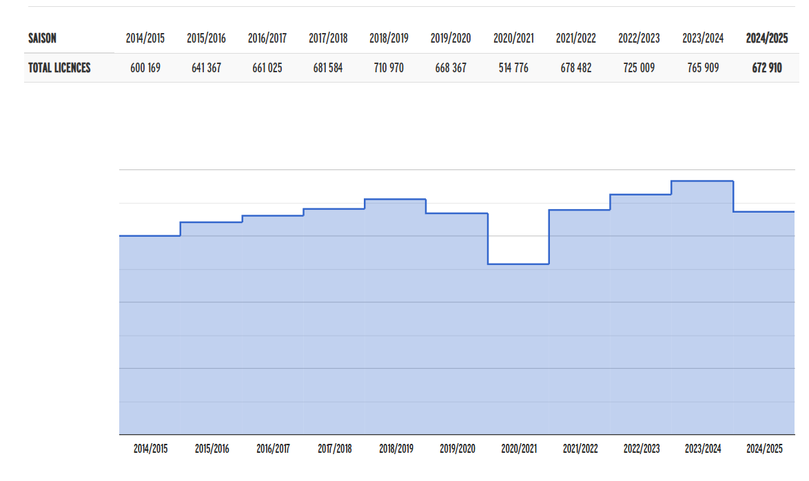
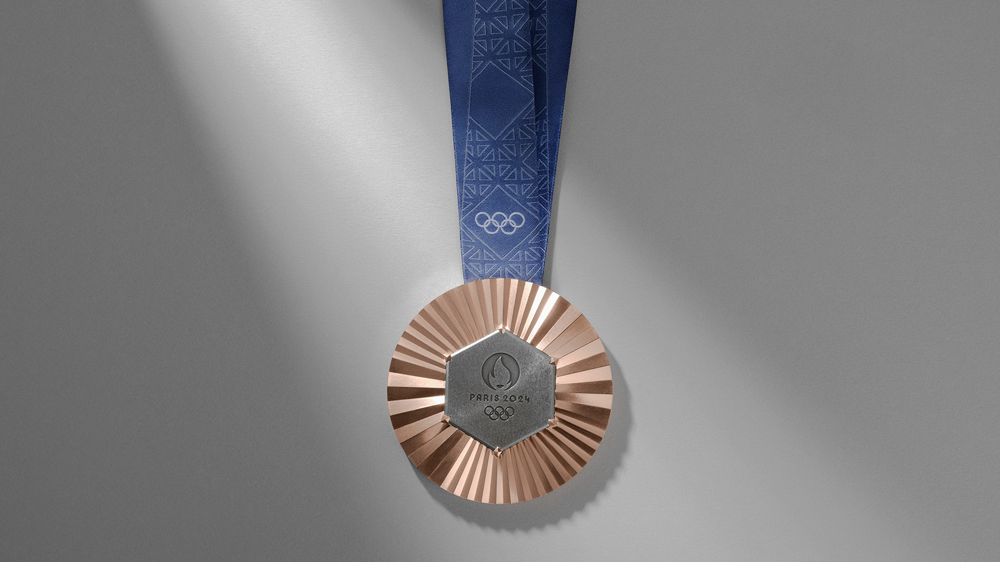

Prix des billets pour les épreuves des JO

Le Comité d'Organisation des Jeux Olympiques de Paris 2024 indique que 3,25 millions de billets ont été vendus en moins de 3 semaines et que le basket-ball est le 4ème sport le plus plébiscité.
Répartition des licenciés

Voici un graphique présentant la répartition des licenciés Français en fonction des régions.
Evolution du nombre de licenciés
Les JO n'ont pas eu un impact si important si le nombre de licenciés de basket-ball en France en 2024. En effet le nombre de licenciés entre 2023 et 2024 (soit avant et après les JO) a diminué de 93000 licenciés environ.
Primes accordées aux médaillés olympiques français
Médaille d'or

65000 euros
Médaille d'argent

25000 euros
Médaille de bronze
15000 euros